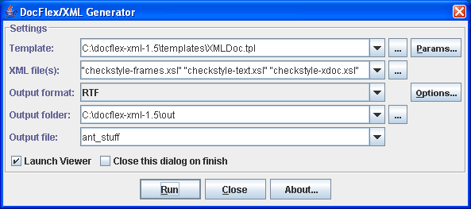
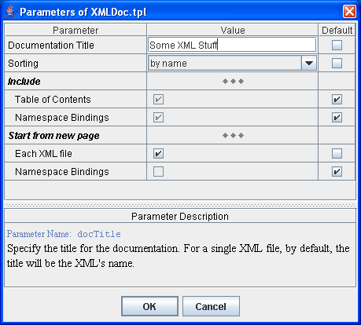
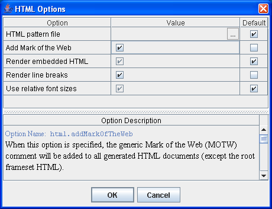
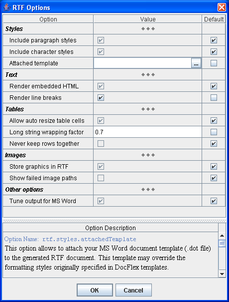
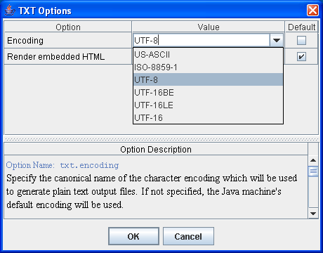
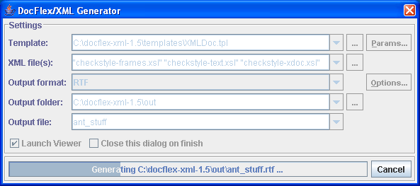
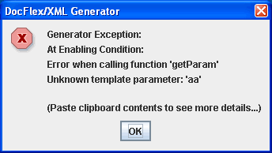

DocFlex/XML (Kit) - Documentation
- Installation
- Launching Generator
- Generator Dialog
- Command Line Options
- Configuration Files
- Tips
1. Installation
Installation of DocFlex/XML (Kit) is very simple:
- Unpack the downloaded archive.
- Edit
generator.bat to specify the 'JRE'
variable according to the location of Java 5 or Java 1.4.x installed on your system.
Now, you can start the DocFlex/XML Generator.
2. Launching Generator
To start the DocFlex/XML Generator, just run generator.bat found in DocFlex/XML (Kit) root directory.
This is the precise Java command line that starts the generator:
java [java_options] <class_path> <generator_class> [options] [XML files]
where
-
<java_options> are the Java machine options.
When you are going to process large quantities of data (e.g. big XML files or a lot of them at once),
use -Xmx option to set the maximum heap size allocated by JVM.
Otherwise, the generator may slow down and even run out of memory!
For example, setting -Xmx512m will allow to allocate 512 Mb for the heap.
-
<class_path> is the DocFlex/XML class path which should be the following:
-cp lib\xml-apis.jar;lib\xercesImpl.jar;lib\docflex-xml-kit.jar
-
<generator_class> is this:
com.docflex.xml.Generator
-
[options] are the Generator
command line options you need
-
[XML files] specify one or multiple XML files to process
Note: When [options] or [XML files] are omitted,
the generator will try to load all missing settings from the
generator.config file
(see also -config option).
3. Generator Dialog
Once you have started the DocFlex/XML Generator (and
no -nodialog option was specified),
you will see the Generator Dialog.
The Generator Dialog provides a user-friendly GUI for specifying most of the settings
needed for the generator as well as allows running it with
displaying the generation progress bar:

The dialog fields are initialized with exactly those settings prepared for the generator
-- that is the generator options specified on the command line plus everything else loaded from
the generator config file
(see also -config option).
Specifying Template
In the “Template” field, you should specify the pathname of the main template
to be interpreted by the generator.
The combo-box contains the list of recently used templates,
where you can quickly pick one as soon as you need.
This field duplicate -template
option specified on the generator command line.
Setting Template Parameters
For the specified template, the “Params” button invokes
the Template Parameter Inspector, like the one shown on this screenshot:

The inspector content is constructed dynamically from the
parameter definitions
contained in the given template.
In fact, when you click the “Params” button, the template file is loaded and parsed
in order to obtain those definitions.
The parameter values are displayed and edited according to their types.
The bottom panel in the inspector dialog displays the description of the selected parameter
(which is also obtained from the template).
The first line of the description (the highlighted text) shows the internal parameter name.
Use this name in the -P option to specify the parameter value
on the generator command line.
Choosing XML File(s)
In the “XML File(s)” field, you should specify one or several XML files
to be used as the generator's data source.
When multiple XML files are specified, each pathname should be enclosed in double quotes.
Each XML file can be specified either by local path name or by URL
(e.g. http://www.w3.org/2001/XMLSchema.xsd).
In the last case, the generator will try to download such a file directly
from the Internet.
Selecting Output Format
The “Output format” combo-box allows you to select the output format
of the generated documentation. Currently, the following formats are supported:
Since all document templates
are output format independent, if you have specified one in the “Template” field,
you can freely use any output format.
The frameset templates
are supported only by HTML output format.
Similar to the template parameters, the “Options” button near the
“Output format” combo-box invokes the Format Option Inspector
which is specific for the selected output format.
The bottom panel in the inspector dialog displays the description of the selected option.
The first line of the description (the highlighted text) shows the internal option name.
This name should be used in the -O option to specify the format
option value on the generator command line.
The following screenshots show the option inspectors for each supported output format:
HTML Option Inspector

RTF Option Inspector

TXT Option Inspector

Specifying Output Location
- Output folder
- Use this field to specify the destination directory for the generated documentation.
See -d option for more details.
- Output file
- Use this field to specify the documentation main output file name.
See -f option for more details.
Running Generator
Once all settings prepared, the generator can be started by clicking the “Run” button.
Then, the dialog transforms and the progress panel appears:

The progress bar tracks the generation progress and shows the name of the output file being
currently generated. The “Cancel” button allows to stop the generation at any moment.
Once the generation has finished or cancelled, the
Generator Dialog transforms back to the initial state.
Then, the new settings can be entered and the generation started again.
When the generation was successful and the “Launch Viewer” check-box
selected, the generator will try to launch an external application (e.g. MS Word)
to view the produced result. See -launchviewer option
for more details about this setting.
4. Command Line Options
The DocFlex/XML Generator recognizes the following command line options:
Please note, options not specified directly on the command line, first, will
be searched in the generator.config file
and only when not found their default values will be used.
Here are option details grouped by category:
Template Options
- -template <file>
- Specifies the main template file to be executed by the generator. All what
is generated is controlled by this template. The main template may call from itself
another templates
(subtemplates)
producing either a single output file or multiple files (framed documentation).
The template file may be specified both with absolute or relative pathname.
The relative pathname will be treated against the default template directory
(specified in docflex.config file).
- Examples:
-
-template C:\docflex-xml\samples\sales\sales.tpl
-template XMLDoc.tpl
- -P<parameter>=<value>
or -p:<parameter>=<value>
- Specifies the value of a template parameter.
Notes:
-
You can find the necessary parameter names in the
Template Parameter Inspector
invoked from the Generator Dialog.
-
The boolean values should be specified as "true" and "false" strings
(for example,
-p:includeImages=true).
-
When the value contains spaces, enclose it in double quotes
(for example,
-p:title="My Docs").
Output Options
- -format <HTML | RTF | TXT>
- Specifies the output format. By default, HTML.
- -O<option>=<value>
or -o:<option>=<value>
- Specifies the output format option.
Notes:
- You can find the necessary option names in the
Format Option Inspector
invoked from the Generator Dialog.
- The values of the boolean options should be specified as "true" and "false" strings
(for example,
-o:rtf.storeGraphicsInRTF=false).
- -d <directory>
- Specifies the destination directory for the generated report/documentation.
This option works in conjunction with the -f option.
The output files are distributed in the following way:
-
In the case of a single-file output
-
The output document is placed in the destination directory under default file name
'template_name.format_extention' (for example, in the RTF output format,
template XMLDoc.tpl will produce document 'XMLDoc.rtf').
The -f option may override this name.
-
All associated files (such as images, if not included in the document) are placed
in the 'docname_files' subdirectory near the main document.
-
In the case of a framed multiple-file documentation
-
By default, all generated files and subdirectories are placed in the specified destination
directory. The frameset file produced by the main template is saved under the name 'index.html'.
-
If a different name 'docname' is specified with the -f option,
the frameset file is saved under this name. All other files and the subdirectory tree are moved into
'docname_files' subdirectory near the frameset file.
This makes the whole documentation to look as to consist of only two file entities, which may be easier
to distribute yet during the generation, especially when different types of documentation are produced
from the same project.
- Examples:
-
-template XMLDoc.tpl -format RTF -d c:\out
- generate the document file
c:\out\XMLDoc.rtf with the associated files
subdirectory c:\out\XMLDoc_files\ (if any)
-template SalesReport.tpl -format HTML -d c:\out -f MySales
- generate the report file
c:\out\MySales.html with the associated files
subdirectory c:\out\MySales_files\ (if any)
-template XMLDocFrames.tpl -format HTML -d c:\out
- generate the framed documentation located in the directory
c:\out\
with the main file index.html
-template XMLDocFrames.tpl -format HTML -d c:\out -f MyXML
- generate the framed documentation with the main file
c:\out\MyXML.html
and all other files located in the directory c:\out\MyXML_files\
- -f <file>
- Specifies the output file name. This option works in conjunction with the
-d option and specifies the name of the main output file
(the one associated with the main template).
Typically, it should be used to specify a pure name associated with the generated report/documentation
(for example, 'MySales'). However, the pathname may also be used. In that case, it is interpreted
against the initial destination directory (specified with the -d option)
and may override it. If the pathname is the absolute one, the -d option
is effectively ignored.
- -launchviewer[=<true | false>]
- Tells the generator to execute a specific non-Java command to launch an external application
able to view the generated result (for instance, an Internet browser for viewing HTML files
or MS Word for RTF document).
Precisely, this command is specified in docflex.config file found near
docflex-xml.jar file in the lib directory.
- Examples:
-
-launchviewer
- Do launch viewer
-launchviewer=false
- Do not launch viewer, no matter what's specified in the
generator.config
Configuration Options
- -config <file>
- Specifies the generator configuration file,
which may contain options written manually or using the
Generator Dialog. All generator options not provided directly
on the generator command line are searched in this file.
If this option is not provided, the location of the generator config file will be searched in
docflex.config which, by default, points to
'generator.config' in 'config' directory.
- -xmlconfig <file>
- Specifies the location of the XML Types configuration file.
If this option is not provided, the location of the XML Types config file will be searched in
docflex.config which, by default, points to
'xmltypes.config' in 'config' directory.
- -docflexconfig <file>
- Specifies an alternative path to the DocFlex main configuration file.
By default, this file is
'docflex.config' which is searched in the
directory where the DocFlex Java library file 'docflex-xml.jar' is
located. If not found, docflex.config is created automatically with default settings.
- -M<macro>=<value>
or -m:<macro>=<value>
- Specifies a macro which you can use in docflex.config
or xmltypes.config files in order to avoid specifying
absolute pathnames within those files (or for other purposes).
Other Options
- -nodialog[=<true | false>]
- Do not invoke the Generator Dialog.
If this option specified, the generation will be started immediately
according to the setting provided on the command line
and in the generator config
(see -config option).
Then, the generator exits.
- -errlog <file>
- Specifies the error log file used when the DocFlex Generator
is executed without the Generator Dialog
(i.e. when -nodialog option is also specified on the
command line).
By default, when an unexpected error/exception occurs during the generation and no GUI is enabled,
all details about the error are printed to the standard console.
Using this option, you can assign a separate error log file, into which the detailed ERROR REPORT is dumped
each time an error happens. Only brief messages will get on the console in that case.
(See also Error Reporting for more details.)
The error log file should be specified as an absolute or relative file pathname.
When the pathname points to a directory, it will be extended with the default
“docflex_error.log” name (for example, setting "-errlog ."
will be interpreted as 'docflex_error.log' file located in the current directory).
If the error log file does not exist, it is created in the event of error.
Otherwise, the ERROR REPORT is appended to the existed file.
In the case of any I/O error related to the error log file itself, everything will be printed
to the console (along with additional the log file error message).
- -quiet[=<true | false>]
- Suppresses displaying most of the status messages to Java console.
Command Line Argument Files
To shorten/simplify list of arguments on the command line, you can specify
one or more files containing all those arguments you need. Any such file should contain
space- or newline-separated arguments or options written the same way as on the command line.
When DocFlex parses the command line arguments and encounters an argument beginning
with the character '@', it treats the characters following it as a file name and
expands the contents of that file into the argument list.
Example:
- This will run DocFlex/XML (on MS Windows platform):
set classpath=lib\xml-apis.jar;lib\xercesImpl.jar;lib\docflex-xml.jar
java -cp %classpath% com.docflex.xml.Generator @argfile
- The
argfile may contain the following lines:
-template templates/XMLDoc.tpl
-p:title="Sales XML Files"
-format RTF
-nodialog
-launchviewer
samples/sales/sales.xsd
samples/sales/sales.xml
5. Configuration Files
|
File
|
Description
|
 docflex.config docflex.config
|
This is the DocFlex/XML main configuration file.
It contains:
-
The locations of other configuration files used by DocFlex/XML. Normally,
all of them reside in the same
'config' directory.
-
The default template directory
-
The default output directory
-
The definitions of macros
-
The external system command to open a URL which is used to launch an external viewer
for generated output files (see -launchviewer
command line option).
The main configuration file is used for reading only and never changed.
- Default Location:
-
By default, the main configuration file is
'docflex.config' and searched
in the same directory where the DocFlex/XML Java library
'docflex-xml.jar' is located.
If not found, the 'docflex.config' file is created automatically
with the default settings.
- Alternative Location:
-
Can be specified using -docflexconfig option
on the Generator command line.
|
|
xmltypes.config
|
XML Types configuration file; contains definitions of XML data sources.
This file should be prepared manually and its presence is critical for running DocFlex/XML.
- Default Location:
-
config/xmltypes.config --
assigned in the main configuration file
- Alternative Location:
-
Can be specified using -xmlconfig option
on the generator command line.
|
|
generator.config
|
The generator configuration file; used by the Generator
to obtain all settings not specified directly on the command line.
This file is created and maintained automatically by the generator dialog.
It contains:
- The last used templates
- The values of template parameters
- The last used XML files
- The output directory and file name
- The output format options
When the generator dialog is invoked next time,
those settings are restored from the generator config file, so you don't need to re-enter them again.
The values of template parameters previously specified for one template will also
be loaded into the equally named parameters of other templates.
You can use the generator dialog to quickly prepare
a config file with the specific settings you need and, then, provide only this file
on the generator command line
(using -config option) instead of specifying all those settings
directly.
- Default Location:
-
config/generator.config --
assigned in the main configuration file
- Alternative Location:
-
Can be specified using -config option
on the generator command line.
|
6. Tips
Here are some tips on various topics of using DocFlex/XML
and the output documents produced with it.
Generation Phases
DocFlex generates the whole documentation in two phases:
estimation phase and generation phase.
In the estimation phase, the generator quickly passes
over all the source data and partially interprets the involved templates.
During that, it collects the names and location of all documentation files
to be created and all possible hypertarget locations within them. It also
makes an estimation of the total generation time in order to graduate
the progress bar.
During the estimation phase, only the message
"Scanning data source, please wait..." is displayed on the
generator dialog's progress bar.
Please note, the estimation phase may take some time!
On a lot of data (plus a slow computer), it may last some minutes.
This does not mean, the generator hangs. Please wait!
During the generation phase, all template components are
being fully interpreted and the real output generated. The progress bar is alive
and shows what's being generated at the particular moment.
Error Reporting
During the generation, there may be various unexpected errors and exceptions
caused by the following:
-
I/O errors (e.g. invalid file pathnames, disk full, etc.)
-
Template errors (when something is improperly specified in templates).
-
Data source exceptions (in the case of DocFlex/XML,
these may be exceptions thrown by the
Apache Xerces2).
-
DocFlex core exceptions (these may be caused by bugs not discovered and fixed yet).
DocFlex tries to catch all such errors/exceptions and report about them along
with the full diagnostics possible (i.e. where exactly and how the error has happened).
When the Generator Dialog is enabled,
any error is reported via the error message dialog, like the one shown on the screenshot:

The error dialog shows brief information about the error.
When more details are available, a full ERROR REPORT is created and dumped to the system clipboard.
You can easily extract it (e.g. under MS Windows, just run Notepad and press Ctrl+V).
The detailed ERROR REPORT includes:
- The general info about JVM, OS, command-line arguments, etc.
- All available error messages.
-
The Template Location Trace that shows which precisely template component was being interpreted
when the error happened.
- The Java Exception Stack Trace (when the error was caused by some unexpected Java exception).
When the DocFlex Generator is executed without GUI
(-nodialog option is specified on the generator
command line), by default, all exception/error details are printed
to the standard console.
However, using -errlog option, you can specify a separate error log file.
In that case, the detailed ERROR REPORT will be dumped in that file; only brief messages will get on the console.
Updating RTF Fields
The RTF documentation generated by the provided templates heavily uses document
fields (for such things like page number references,
number of pages and so on).
When you load the generated RTF in MS Word, to have the fields display the correct values,
you will need to update them. To do this, please type: Ctrl+A, then F9.
Inserting "Mark of the Web" comment in HTML
When you run generated HTML documentation from a local drive using Internet Explorer with Windows XP SP2,
the Information Bar may indicate that active content (the JavaScript in the HTML) has been blocked.
To avoid this problem, according to Microsoft, a Mark of the Web (MOTW) comment should be inserted in all generated
HTML documents.
DocFlex/XML is able to insert the generic MOTW automatically (see code below).
This is controlled by "Add Mark of the Web" option
(see HTML Options Inspector).
You may also program inserting MOTW by yourself using a special HTML pattern file.
To do this, you should create a separate HTML file with the following content:
<!DOCTYPE HTML PUBLIC "-//W3C//DTD HTML 4.0 Transitional//EN">
<!-- saved from url=(0014)about:internet -->
<HTML>
<HEAD>
<!-- docflex-html-head -->
</HEAD>
<BODY>
<!-- docflex-html-body -->
</BODY>
</HTML>
Then, specify location of this file in the “HTML pattern file” field within the
HTML Options Inspector (or using
'-o:html.documentPatternFile' formatting option
on the generator command line).
DocFlex will produce all HTML documents using the specified HTML pattern file with the
lines <!-- docflex-html-head --> and
<!-- docflex-html-body --> replaced with the actual generated output.
For more information about MOTW, please refer to Microsoft MSDN web-site:
http://msdn.microsoft.com
Integrating with Apache Ant
You may want to integrate the DocFlex Generator
with the Apache Ant
automated build system.
Here is an example of how it can be done.
Let's suppose, we want to generate a framed HTML documentation using
XSDDocFrames.tpl template
by the XML schema located at the URL 'http://www.w3.org/2001/XMLSchema.xsd'.
We can do this using the following ordinary command line:
java
-Xmx512m
-cp lib\xml-apis.jar;lib\xercesImpl.jar;lib\docflex-xml-kit.jar
com.docflex.xml.Generator
-template templates\XSDDocFrames.tpl
-format HTML
-d out
-nodialog
http://www.w3.org/2001/XMLSchema.xsd
The following is an equivalent Ant build.xml file:
build.xml
|
<?xml version="1.0"?>
<project basedir="." name="XSDDoc"> <property name="cp" value="lib\xml-apis.jar;lib\xercesImpl.jar;lib\docflex-xml-kit.jar"/>
<target name="xsddoc">
<java classname="com.docflex.xml.Generator" classpath="${cp}" fork="true" maxmemory="512m">
<arg value="-template"/> <arg value="templates\XSDDocFrames.tpl"/>
<arg value="-format"/>
<arg value="HTML"/>
<arg value="-d"/>
<arg value="out"/>
<arg value="-nodialog"/>
<arg value="http://www.w3.org/2001/XMLSchema.xsd"/>
</java>
</target>
</project>
|
To run this file, you can use a Windows BAT specified like the following:
set ANT_HOME=C:\apache-ant
set PATH=%ANT_HOME%\bin;%PATH%
set JAVA_HOME=C:\jre1.5
call %ANT_HOME%\bin\ant.bat xsddoc
(Note, it should be started from the directory containing the Ant build.xml file!)
Copyright© 2003-2006 Filigris Works. Leonid Rudy Softwareprodukte. All rights reserved.
To contact us, please visit
www.filigris.com or e-mail to: contact@filigris.com